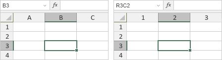

Napredna podešavanja Uređivača tabela
Uređivač tabela vam omogućava da promenite njegova opšta napredna podešavanja. Da biste im pristupili, otvorite karticu Datoteka na gornjoj traci sa alatkama i izaberite opciju Napredna podešavanja.
Napredna podešavanja su grupisana na sledeći način:
Uređivanje i čuvanje
- Automatsko čuvanje se koristi u onlajn verziji za uključivanje/isključivanje automatskog čuvanja izmena tokom procesa uređivanja.
- Automatski oporavak se koristi u desktop verziji za uključivanje/isključivanje opcije koja omogućava automatski oporavak tabela ako se program neočekivano zatvori.
- Prikaži dugme Opcije lepljenja kada se sadržaj nalepi. Odgovarajuća ikona će se pojaviti kada nalepite sadržaj u tabelu.
- Prikaži oblačić sa opisom funkcije – omogućava savete prilikom unosa funkcija.
Saradnja
-
Pododeljak Režim zajedničkog uređivanja omogućava da podesite željeni način prikaza izmena u tabeli tokom saradnje.
- Brzi (podrazumevano). Korisnici koji učestvuju u zajedničkom uređivanju vide izmene u realnom vremenu, čim ih drugi korisnici naprave.
- Strogi. Sve izmene koje naprave saradnici biće prikazane tek nakon što kliknete na ikonu Sačuvaj , koja vas obaveštava o novim izmenama.
- Prikaži izmene drugih korisnika. Ova funkcija omogućava prikaz izmena koje su napravili drugi korisnici u tabeli otvorenoj samo za pregled u režimu Live Viewer.
- Prikaži komentare u tekstu. Ako onemogućite ovu opciju, komentarisani delovi biće istaknuti samo kada kliknete na ikonu Komentari na levoj bočnoj traci.
- Prikaži rešene komentare. Ova opcija je podrazumevano onemogućena, tako da su rešeni komentari skriveni u tabeli. Takve komentare možete videti samo ako kliknete na ikonu Komentari na levoj bočnoj traci. Omogućite ovu opciju ako želite da se rešeni komentari prikazuju u tabeli.
Izgled
-
Opcija Tema interfejsa koristi se za promenu šeme boja interfejsa uređivača.
- Opcija Isto kao sistem čini da uređivač prati temu interfejsa vašeg sistema.
- Svetla šema boja uključuje standardne plave, bele i svetlosive boje sa manjim kontrastom, pogodna za rad tokom dana.
- Klasična svetla šema boja uključuje standardne plave, bele i svetlosive boje.
- Tamna šema boja uključuje crne, tamnosive i svetlosive boje, pogodna za rad tokom noći.
- Kontrastna tamna šema boja uključuje crne, tamnosive i bele boje sa većim kontrastom elemenata interfejsa, ističući radnu oblast dokumenta.
- Siva šema boja uključuje svetliju sivu boju i prikazuje se kao ujednačeno svetla šema.
-
Opcija Uključi tamni režim dokumenta koristi se za zatamnjivanje radne oblasti kada je uređivač podešen na Tamnu ili Kontrastnu tamnu temu interfejsa. Označite polje Uključi tamni režim dokumenta da biste je omogućili.
Napomena: Pored dostupnih tema interfejsa Svetla, Klasična svetla, Tamna, Kontrastna tamna i Siva, ONLYOFFICE uređivači se mogu prilagoditi i sopstvenom temom boja. Pratite ova uputstva da biste saznali kako to možete učiniti.
- Stil kartica – izaberite da li želite da trenutno izabrana kartica bude popunjena svetlijom bojom pomoću opcije Popuna ili da bude podvučena pomoću opcije Linija.
- Koristi boju trake sa alatkama kao pozadinu kartica – boja trake sa alatkama koristiće se kao pozadina kartica. Boja trake zavisi od trenutno izabrane teme interfejsa.
Radni prostor
- Opcija Uključi podršku za čitače ekrana koristi se za omogućavanje podrške za softver za čitanje ekrana.
-
Opcija R1C1 stil referenci je podrazumevano onemogućena i koristi se A1 stil referenci.
Kada se koristi A1 stil referenci, kolone su označene slovima, a redovi brojevima. Ako izaberete ćeliju koja se nalazi u 3. redu i 2. koloni, njena adresa prikazana u polju levo od trake sa formulama izgleda ovako: B3. Ako je omogućen R1C1 stil referenci, i redovi i kolone su označeni brojevima. Ako izaberete ćeliju na preseku 3. reda i 2. kolone, njena adresa će izgledati ovako: R3C2. Slovo R označava broj reda, a slovo C označava broj kolone.

Ako se pri korišćenju R1C1 stila referenci pozivate na druge ćelije, referenca na ciljnu ćeliju formira se na osnovu udaljenosti od aktivne ćelije. Na primer, kada izaberete ćeliju u 5. redu i 1. koloni i pozovete se na ćeliju u 3. redu i 2. koloni, referenca je R[-2]C[1]. Brojevi u uglastim zagradama označavaju položaj ćelije u odnosu na trenutnu poziciju, tj. ciljna ćelija je 2 reda iznad i 1 kolonu desno od aktivne ćelije. Ako izaberete ćeliju u 1. redu i 2. koloni i pozovete se na ćeliju u 3. redu i 2. koloni, referenca je R[2]C, odnosno ciljna ćelija je 2 reda ispod aktivne ćelije i u istoj koloni.
- Opcija Koristi taster Alt za navigaciju korisničkim interfejsom pomoću tastature koristi se za omogućavanje upotrebe tastera Alt / Option u prečicama na tastaturi.
- Prikaži dugme za brzo štampanje u zaglavlju uređivača koristi se u desktop verziji za omogućavanje brzog štampanja putem odgovarajućeg dugmeta na gornjoj traci sa alatkama. Datoteka će biti odštampana na poslednje izabranom ili podrazumevanom štampaču.
- Poravnato sa mrežom prilikom pomeranja – omogućava poravnanje sa mrežom tokom pomeranja.
- Prikaži horizontalnu traku za pomeranje – omogućava sakrivanje/prikaz horizontalne trake za pomeranje.
- Prikaži vertikalnu traku za pomeranje – omogućava sakrivanje/prikaz vertikalne trake za pomeranje.
- Podrazumevani smer lista – izaberite da li želite da smer lista bude Sleva nadesno ili Zdesna nalevo. Imajte u vidu da će se ovo podešavanje primenjivati samo na novokreirane listove.
- Dugme Prilagodi brzi pristup koristi se za izbor dugmadi koja će biti dostupna na gornjoj traci sa alatkama, npr. Sačuvaj, Štampaj, Poništi i Ponovi.
- Opcija Jedinica mere koristi se za određivanje jedinica koje se koriste na lenjirima i u svojstvima objekata pri podešavanju parametara kao što su širina, visina, razmak, margine itd. Dostupne jedinice su Centimetar, Tačka i Inč.
-
Opcija Podrazumevana vrednost zumiranja koristi se za podešavanje podrazumevane vrednosti zumiranja, izborom jedne od dostupnih opcija od 50% do 500%. Takođe možete izabrati opcije Prilagodi stranici, Prilagodi širini ili Poslednje korišćeno.
Opcija Poslednje korišćeno odnosi se na poslednju postavljenu vrednost skaliranja tokom tekuće sesije.
-
Opcija Hintovanje fontova koristi se za izbor načina prikaza fontova u Uređivaču tabela.
- Izaberite Kao u Windows-u ako vam odgovara način prikaza fontova na Windows-u, odnosno uz korišćenje Windows hintovanja fontova.
- Izaberite Kao u OS X-u ako vam odgovara način prikaza fontova na Mac računarima, bez ikakvog hintovanja.
- Izaberite Izvorno da bi se tekst prikazivao sa hintovanjem ugrađenim u same fajlove fontova.
-
Podrazumevani režim keširanja – koristi se za izbor režima keširanja znakova fontova. Ne preporučuje se promena bez posebnog razloga. Može biti korisno u pojedinim slučajevima, na primer kada se javi problem sa uključenim hardverskim ubrzanjem u pregledaču Google Chrome.
Uređivač tabela ima dva režima keširanja:
- U prvom režimu keširanja, svako slovo se kešira kao zasebna slika.
- U drugom režimu keširanja, bira se slika određene veličine u koju se slova dinamički smeštaju, a implementiran je i mehanizam za dodelu/oslobađanje memorije u toj slici. Ako nema dovoljno memorije, kreira se druga slika itd.
Podešavanje Podrazumevani režim keširanja primenjuje navedene režime keširanja različito u zavisnosti od pregledača:
- Kada je opcija Podrazumevani režim keširanja uključena, Internet Explorer (v. 9, 10, 11) koristi drugi režim keširanja, dok ostali pregledači koriste prvi režim keširanja.
- Kada je opcija Podrazumevani režim keširanja isključena, Internet Explorer (v. 9, 10, 11) koristi prvi režim keširanja, dok ostali pregledači koriste drugi režim keširanja.
-
Opcija Podešavanja makroa koristi se za podešavanje načina prikaza makroa uz obaveštenje.
- Izaberite Onemogući sve da biste onemogućili sve makroe u tabeli.
- Izaberite Prikaži obaveštenje da biste dobijali obaveštenja o makroima u tabeli.
- Izaberite Omogući sve da bi se svi makroi automatski pokretali u tabeli.
Regionalna podešavanja
-
Opcija Jezik formula koristi se za izbor jezika za prikaz i unos naziva formula, naziva argumenata i opisa.
Jezik formula je podržan za 33 jezika:
Armenski, Beloruski, Bugarski, Katalonski, Kineski, Češki, Danski, Holandski, Engleski, Finski, Francuski, Nemački, Grčki, Mađarski, Indonežanski, Italijanski, Japanski, Korejski, Laoški, Letonski, Norveški, Poljski, Portugalski (Brazil), Portugalski (Portugal), Rumunski, Ruski, Slovački, Slovenački, Španski, Švedski, Turski, Ukrajinski, Vijetnamski.
- Opcija Region koristi se za podešavanje načina prikaza valute, datuma i vremena.
- Dostupni regioni: Azerbejdžanski, Bugarski, Češki, Danski, Nemački (Austrija), Nemački (Nemačka), Nemački (Švajcarska), Grčki (Grčka), Engleski (Australija), Engleski (Indonezija), Engleski (Ujedinjeno Kraljevstvo), Engleski (SAD), Španski (Španija), Španski (Meksiko), Finski (Finska), Francuski (Francuska), Francuski (Švajcarska), Indonežanski (Indonezija), Italijanski (Italija), Italijanski (Švajcarska), Japanski, Korejski, Letonski, Mađarski, Holandski (Holandija), Poljski (Poljska), Portugalski (Brazil), Portugalski (Portugal), Slovački, Slovenački, Švedski (Finska), Švedski (Švedska), Turski, Ukrajinski, Vijetnamski, Kineski, Tajvanski.
- Opcija Koristi razdvajače na osnovu regionalnih podešavanja je podrazumevano uključena, a razdvajači će odgovarati izabranom regionu. Da biste postavili prilagođene razdvajače, isključite ovu opciju i unesite željene razdvajače u polja Decimalni razdvajač i Razdvajač hiljada.
Provera
- Opcija Jezik rečnika koristi se za podešavanje željenog rečnika za proveru pravopisa.
- Ignoriši reči napisane VELIKIM SLOVIMA. Reči unete velikim slovima biće ignorisane tokom provere pravopisa.
- Ignoriši reči sa brojevima. Reči koje sadrže brojeve biće ignorisane tokom provere pravopisa.
- Meni Opcije automatske ispravke omogućava pristup podešavanjima automatske ispravke, kao što su zamena teksta tokom kucanja, prepoznavanje funkcija, automatsko formatiranje itd.
Izračunavanje
- Opcija Koristi datumsku bazu 1904 koristi se za izračunavanje datuma koristeći 1. januar 1904. kao početnu tačku. Može biti korisna pri radu sa tabelama kreiranim u MS Excel 2008 za Mac i starijim verzijama MS Excel-a za Mac.
- Opcija Omogući iterativno izračunavanje koristi se za aktiviranje iterativnog izračunavanja.
- Opcija Maksimalan broj iteracija koristi se za podešavanje broja ponavljanja izračunavanja formula sa kružnom referencom dok se ciklus ne zaustavi.
- Opcija Maksimalna promena koristi se za podešavanje preciznosti iterativnih izračunavanja.
Izmene se čuvaju automatski tokom rada.